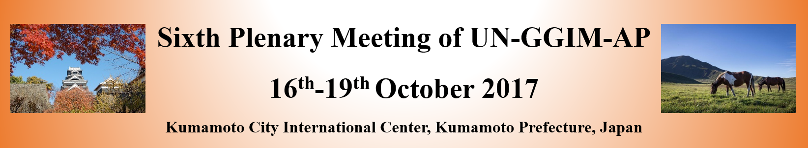

|  |
|
Introduction The Regional Committee of United Nations Global Geospatial Information Management for Asia and the Pacific (UN-GGIM-AP), in collaboration with the Government of Japan, through the Geospatial Information Authority of Japan (GSI), will jointly organize the Sixth Plenary Meeting of UN-GGIM-AP in Kumamoto Prefecture, Japan, from 16-19 October 2017. The Plenary Meeting will cover its conventional agenda items, including report on the major outcomes of the Seventh Session of UN-GGIM held in August 2017, summarizing the various activities and progress of the Committee and its four Working Groups during the past year. In addition, at the Sixth Plenary Meeting, a special session will be arranged to introduce GSI's responses to the 2016 Kumamoto Earthquake based on the understanding that reviewing how a country has responded with geospatial information on a specific disaster case would clarify the differences in disaster management of member countries. It will provide a great opportunity for open discussions on the potential roles of NGIAs in the disaster risk management. We are looking forward to seeing you in Kumamoto. |